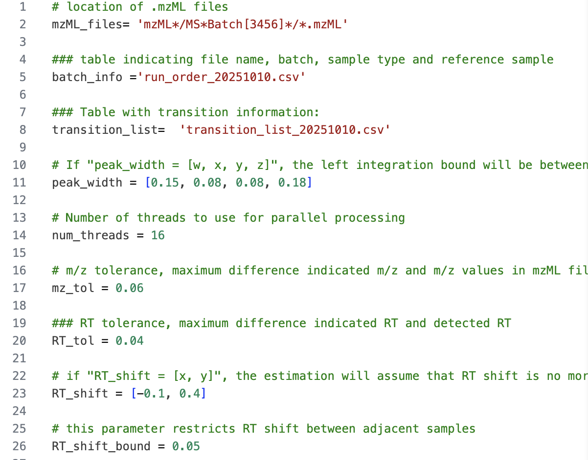
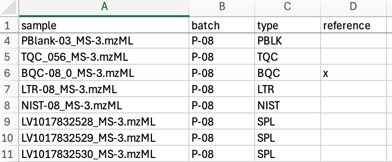
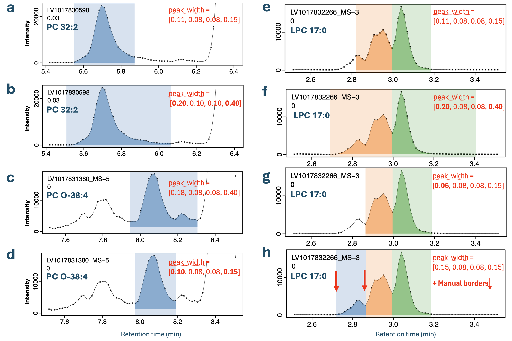

Input Files
Reference for the INTEGRATOR input files: the global parameters (param.txt), the sample list (run_order.csv), and the transition/feature list, with guidance on tuning peak integration.
INTEGRATOR reads three input files together with the mzML/ data folder. This page documents each of them. For how the software uses these settings internally, see the Peak Detection and Integration Algorithm.
Global parameters (param.txt)
The software requires a global parameter file (param.txt by default), which directs it to the required information and controls peak detection and integration.
| Parameter | Description | Default |
|---|---|---|
mzML_files |
Location of the mzML files used for peak integration. | mzML |
batch_info |
Input file listing the mzML file names and their metadata (see below). | run_order.csv |
transition_list |
Input file with the MRM transition information (see below). | feature_list.csv |
peak_width |
[w, x, y, z] define the allowed integration bounds: the left border falls w–x min and the right border y–z min from the apex (see below). |
[0.17, 0.05, 0.1, 0.35] |
num_threads |
Number of CPU threads used for the integration task. | 2 |
mz_tol |
Tolerance between the indicated and the detected m/z values. | 0.06 |
RT_tol |
Tolerance between the indicated and the detected RT. A key setting when processing complex chromatograms. | 0.1 |
RT_shift |
[x, y] bound the RT drift relative to the reference samples: the peak may lie at most x min earlier and y min later than expected. The lower bound is written as a negative value (earlier RT); the upper bound is positive (later RT). Setting [0, 0] disables RT-shift correction. |
[-0.2, 0.2] |
RT_shift_bound |
Maximum allowed RT drift between adjacent samples. | 0.1 |
Worked example. A published lipidomics dataset (Agilent triple-quadrupole) used mz_tol = 0.06, RT_tol = 0.04, and peak_width = [0.15, 0.08, 0.08, 0.18] globally, with per-feature overrides for broad or convoluted peaks, an RT-shift window of (-0.1, 0.4), and a maximum sample-to-sample RT shift (RT_shift_bound) of 0.05. These values provide reasonable starting points for a fast, well-resolved method. See the full Dataset 3 workflow ↗ for the complete input files and the resulting integration.

param.txt file used for the Dataset 3 worked example, showing all configured parameters and their values.Sample list (run_order.csv)
This file lists the data files to be processed. The file names must be given in their processing order, from top to bottom. mzML files present in the data folder but not listed here are ignored. Columns containing required information for individual data files are marked in bold.
| Column | Description |
|---|---|
| file name | The mzML file names to be processed, located in the folder defined under mzML_files in param.txt. Must include the .mzML extension. |
| batch | The analysis batch identifier the file belongs to. This value has no function inside INTEGRATOR, but is carried through to the result. |
| sample_type | The sample (QC) type of the corresponding sample. Blanks must be labelled with text containing BLK, as these are processed differently (see below). For all other cases, any sample type may be defined, and the information is forwarded to the integration results; the field may also be left empty. Use of the default MRMhub QC types (see QUANT — Sample Types & QC Roles) is recommended to ensure reliable integration with the QUANT module. |
| reference | Indicates that the sample is used as a reference for RT-shift estimation (see below). Label with x. When selecting multiple samples, ensure they exhibit negligible RT shifts relative to one another. |
How sample_type is used. INTEGRATOR distinguishes only blanks (any sample_type containing the text BLK), which are processed differently during peak finding, from non-blanks. Every other sample/QC-type label has no effect inside INTEGRATOR; it is carried through to long.csv for use by the QUANT module. Using the standard MRMhub QC nomenclature here allows QUANT to assign the QC roles automatically.

reference column).Transition / Feature list (feature_list.csv)
This file specifies the transitions to be processed and the features to be integrated for each transition. Transitions present in the mzML files but not listed here are ignored. Columns containing required information for each feature are marked in bold.
| Column | Description |
|---|---|
| Compound Name | Feature (analyte) identifier. Must be a unique value, typically identifying a single peak. Multiple distinct features can be defined for one transition. |
| Transition Name | Transition identifier. Values may be repeated. |
| ISTD | The internal standard feature assigned to the corresponding compound. This value currently has no function in the INTEGRATOR modules, but is included in the results and read by the QUANT module. May be left empty; if defined, it must correspond to a defined Compound Name. |
| Precursor Ion | The m/z value of the precursor ion. Must match the corresponding value in the mzML file within the tolerance set by mz_tol in param.txt. |
| Product Ion | The m/z value of the product ion. Must match the corresponding value in the mzML file within the tolerance set by mz_tol in param.txt. |
| RT | The expected retention time of the corresponding feature, in minutes. |
| uniform_width | Either y or n (default). If y, the peak boundaries are set to the median of the automatically determined borders. |
| left integration bound | Sets a fixed left peak border for all samples, in minutes (with respect to the reference sample). |
| right integration bound | Sets a fixed right peak border for all samples, in minutes (with respect to the reference sample). |
| peak width | [w, x, y, z] define the allowed integration bounds: left = w–x min, right = y–z min from the apex (see below). Overrides the globally defined peak_width in param.txt. |
| Remarks | Used to document integration settings. |
Effects of the key settings
Most settings trade sensitivity (finding and fully capturing the intended peak) against specificity (not grabbing a neighbouring transition, an adjacent peak, or noise). The table below summarises what happens at each extreme; the peak-width recommendations below provide further detail on peak_width, the most influential setting for difficult chromatograms. For the algorithm that consumes these settings, see the Peak Detection and Integration Algorithm.
| Setting | What it controls | Too small/narrow | Too large/wide |
|---|---|---|---|
mz_tol |
How far the detected m/z may deviate from the value in the transition list | A transition may not be matched at all if the instrument’s m/z calibration is slightly off | A nearby transition / channel may be matched by mistake |
RT_tol |
The retention-time window searched around the expected RT (key for complex chromatograms) | The peak is missed when its RT drifts beyond the window | A wrong, co-eluting, or adjacent peak may be selected instead of the intended one |
peak_width [w,x,y,z] |
Allowed windows for the left (w–x) and right (y–z) peak borders, relative to the apex | Incomplete integration — tailing or broadened peaks get cut short | Smaller adjacent/interfering peaks get co-integrated into the area |
RT_shift [x,y] |
The maximum RT drift expected across the reference samples | Genuine drift between references is not accommodated, hurting peak tracking | The algorithm searches an unnecessarily wide window, raising the chance of picking the wrong peak |
RT_shift_bound |
The maximum RT drift allowed between adjacent samples | A real run-to-run RT jump can break sample-to-sample tracking | Spurious jumps may be followed, tracking drift that isn’t there |
num_threads |
CPU threads used for integration | Slower processing only — no effect on results | Faster, bounded by available cores — no effect on results |
Adjust globally in param.txt to suit the majority of peaks, then use per-feature overrides in the transition list (peak width, uniform_width, fixed integration bounds) only for the problematic minority. Always confirm the effect of a change visually in MRMhub-viz before re-integrating the whole dataset.
Recommendations for setting peak integration parameters
The peak_width parameter, defined globally in param.txt and optionally per feature in the Transition List, is a key setting for automated integration of complex chromatograms. Values are specified in the format [w, x, y, z], where the ranges w–x and y–z define the allowed windows for the left and right peak borders, respectively. The integration algorithm is constrained to set peak start and end points within these ranges, even if its automatic boundary detection would otherwise extend beyond them.
Ranges that are too narrow may lead to incomplete integration, particularly for tailing peaks or peaks of unstable width, whereas ranges that are too wide may cause smaller adjacent peaks to be included in the integration. A global setting that suits the majority of peaks in the dataset should be defined in param.txt, with per-feature settings applied to convoluted, asymmetric, or otherwise broadened peaks. Narrower per-feature ranges can also be used where nearby interferences are not recognised as separate peaks and are consequently co-integrated.
![Schematic of a chromatographic peak illustrating the peak_width [w, x, y, z] parameter. Intensity is on the y-axis and retention time on the x-axis, with the apex marked by a vertical line. Short arrows x and y span the inner windows just left and right of the apex, while wider arrows w and z span the outer windows; the shaded bands mark the allowed ranges for the left border (w to x) and the right border (y to z) relative to the apex.](images/paste-11.png)

peak_width parameter on a peak with clear tailing (PC 36:6): (a) the global setting, suitable for the majority of peaks, and (b) a feature-specific peak width overriding the global value for improved integration. (c, d) Effect on a peak with nearby interferences (PC O-38:4): (c) the global setting, and (d) an excessively wide peak_width that causes incorrect integration, underscoring the importance of an appropriate global value. (e, f) A complex chromatogram of three overlapping LPC 17:0 isomers: (e) the global setting yields only partial integration, with the first peak unrecognised, whereas (f) fixed boundaries defined for the first peak enable correct picking and integration of all three isomers.Set the uniform_width parameter to true for features whose integration is correct in most samples but incorrect or inaccurate in a minority.
Use fixed left/right integration bound times where automated integration, even after tuning the peak_width settings, does not correctly and consistently integrate convoluted peaks or peaks with nearby interferences. These hard border settings are recommended only as a last resort, since fixed borders may require re-adjustment when the same analytical method is applied to other datasets. Note: These defined borders are still adjusted for retention-time shifts.
Next
- Peak Detection and Integration Algorithm — how these settings drive peak detection and integration.
- Running INTEGRATOR — run the four processing steps.
- MRMhub-viz Visualizer — review results and fine-tune these parameters.